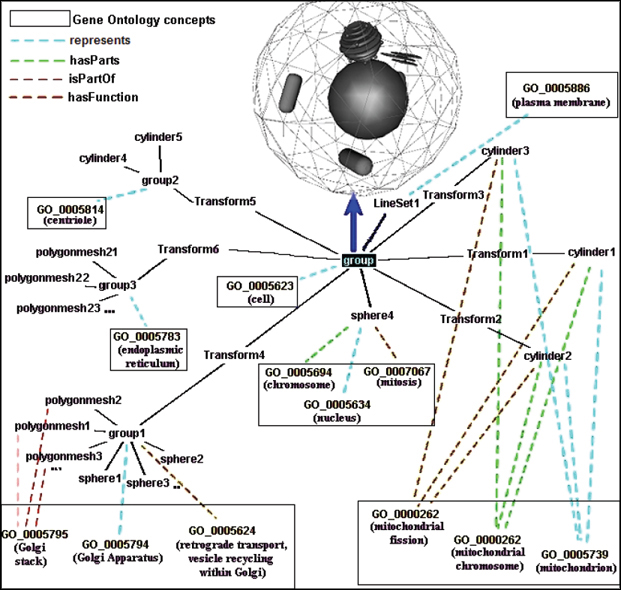
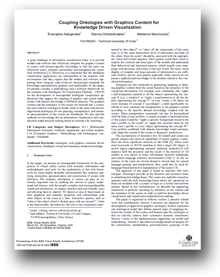

Coupling ontologies with graphics content
for Knowledge Driven Visualization

People
Abstract
A great challenge in information visualization today is to provide models and software that effectively integrate the graphics content of scenes with domain-specific knowledge so that the users can effectively query, interpret, personalize and manipulate the visualized information [1]. Moreover, it is important that the intelligent visualization applications are interoperable in the semantic web environment and thus, require that the models and software supporting them integrate state-of-the-art international standards for knowledge representation, graphics and multimedia. In this paper, we present a model, a methodology and a software framework for the semantic web (Intelligent 3D Visualization Platform – I3DVP) for the development of interoperable intelligent visualization applications that support the coupling of graphics and virtual reality scenes with domain knowledge of different domains. The graphics content and the semantics of the scenes are married into a consistent and cohesive ontological model while at the same time knowledge-based techniques for the querying, manipulation, and semantic personalization of the scenes are introduced. We also provide methods for knowledge driven information visualization and visualization-aided decision making based on inference by reasoning.

Paper
graphicsOntologies.pdf, 1.07MBCitations
Evangelos Kalogerakis, Nektarios Moumoutzis, Stavros Christodoulakis, "Coupling ontologies with graphics content for Knowledge Driven Visualization", Proceedings of the IEEE Virtual Reality Conference 2006 (IEEE VR '06), pp.43-50, Virginia, USA, 25-28 March 2006
Evangelos Kalogerakis, "An Intelligent 3D Visualization System: Incorporating semantics and knowledge for the construction, manipulation, personalization and querying of 3D models and scenes in web based graphics and virtual reality environments", Undergraduate thesis, Technical University of Crete, 2005
Bibtex
Example Ontologies
OntologyX3D.zip, 16KB.This archive contains a demo of the OWL ontology describing the X3D semantics that was developed in this project.
Acknowledgements
This project was funded under the European Union projects Delos I and Delos II. DELOS is a Network of Excellence on Digital Libraries funded by the EU Sixth Framework Programme in the frame of the Information Society Technologies Programme (IST).